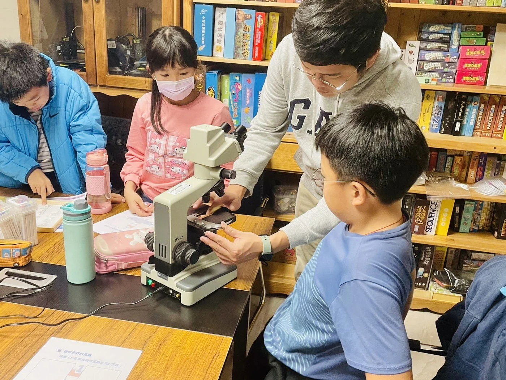
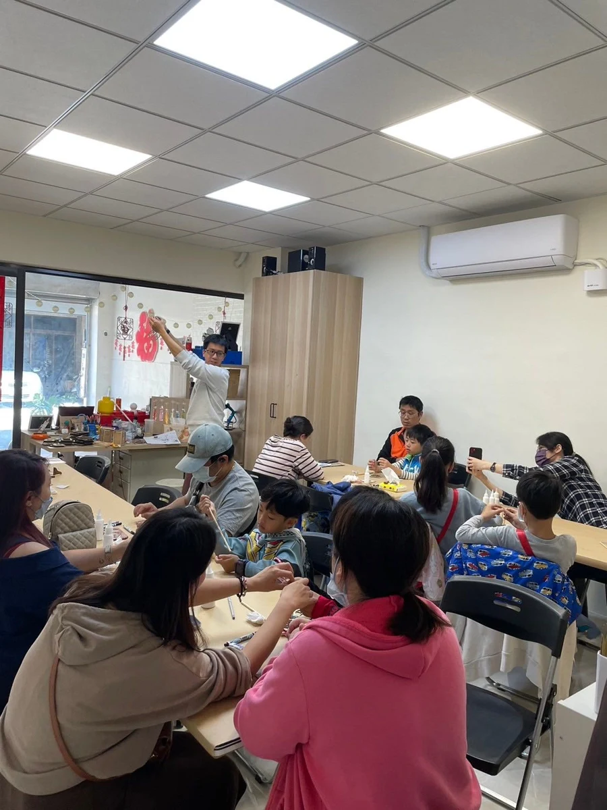
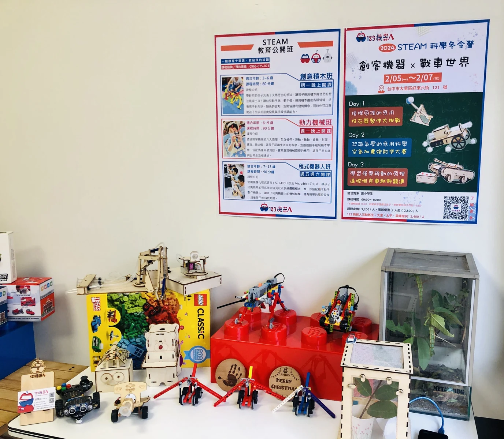

程式、機器人與創客實作，連結學習與應用。課程、營隊、校園工作坊與教師研習合作請先洽詢。
以操作、組裝與任務串起學習，讓抽象的邏輯有具體的回應。
結合設計、材料與工具，透過製作作品探索跨領域應用。
依教學目標與場地需求，討論課程主題、設備搭配與活動安排。



適合以一個主題或作品開始，依對象與時間安排實作內容。
從課程目標、場地與既有器材出發，討論教學與實作的搭配。
整合程式、機構、設計與材料，依主題討論活動與課程規劃。
實際課程主題、師資、設備、材料、時間與費用依雙方確認的合作內容安排。
對象、人數、地點、日期與希望達成的成果，是討論合作的起點。